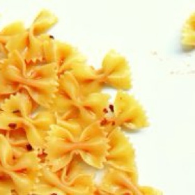

← All recipes
Spicy Pressure Cooked Pasta Butterflies

Servings: Serves: 4-6 · Prep: 5 mins · Cook: 15 mins
Ingredients
- 2 cloves garlic, smashed
- 2 fresh hot chili peppers, chopped (or 1 tsp. of hot pepper flakes)
- 1 pinch oregano, dry
- 16 oz. (500g.) Farfalle or Bow-Tie Pasta
- 14.5 oz can (or 2 cups or 400g) Tomato Puree (Passata)
- 2 teaspoons salt
- Olive Oil
Directions
- In the cold (not-pre-heated) pressure cooker, on low heat without the lid, add two swirls of olive oil, the smashed garlic cloves, hot peppers/flakes and oregano (grinding it between your fingers as you sprinkle it in the pan). Allow the ingredients to infuse the oil until you hear the garlic cloves sizzle and turn lightly golden.
- Pour in the pasta, the tomato puree, and just enough water to cover the pasta- it's ok if a few points stick out here and there - and the salt (do not omit this since you would ordinarily add salt to the pasta cooking water). Stir everything together and flatten the pasta out in an even layer with your wooden spoon, or spatula, to make sure as many farfalle are immersed as possible.
- Close the lid and set the valve to pressure cooking position.
- Electric pressure cookers and stove top pressure cookers: Cook for 6 minutes at LOW pressure (or half of the time indicated on the pasta package). NOTE: For pressure cookers with just one (high) pressure, also half the tie indicated on the pasta package, and then subtract 1-2 minutes more.
- When time is up, open the cooker by releasing the pressure.
- Give the contents a stir and let the pasta sit for about a minute while you gather the bowls and utensils. The pasta is still cooking from the heat of the pressure cooker so don't leave it longer than that. Then, serve and caution your guests that the pasta is very hot and to test out the temperature before taking a big bite!
- Top each bowl with a small swirl of fresh olive oil.
Original source: hippressurecooking.com